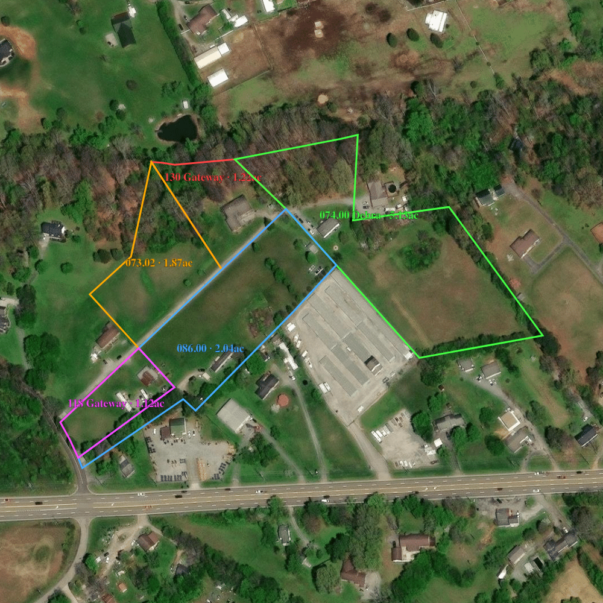
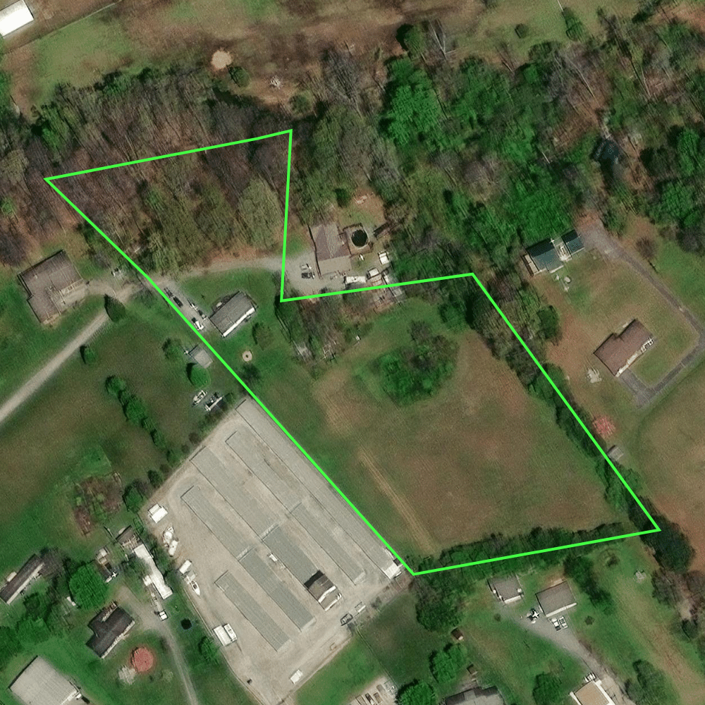

Veredito rápido
Não é um lote — é um portfólio familiar de 5 parcels contíguos (~11,4 acres) no corredor
da US-321 / E Lamar Alexander Pkwy, a rota Maryville → Townsend (portal das Great Smoky Mountains),
colado num complexo de self-storage. Valor de tela pelos comps vendidos:
FMV ~$380–480K como acreage; upside acima de $500K se vender como lotes separados no varejo
ou se o zoneamento permitir uso comercial. Deal de classe grande → discovery primeiro,
nada de oferta cega.
1 · O imóvel — 5 parcels, mesma família
Seller que respondeu: Kenny Montooth (ligou de volta; callback prometido para a tarde de 16/jul).
A esposa Debra também está na lista da campanha (lead separado, ainda sem resposta).
| Parcel | Dono no cartório | Acres (deed) | Observação |
|---|
048-073.01 (130 Gateway Rd) | Kenny & Debra H | 1,22 | Faixa estreita, mata |
048-073.02 | Kenny E & Debra L | 1,87 | Encosta, misto mata/limpo |
048-074.00 | Debra Hord Montooth (só ela) | 5,13 | Pasto aberto, vago — a joia. Abraça o self-storage; a casa com piscina fica num recorte EXCLUÍDO do parcel |
059-086.00 | Kenny E & Debra L | 2,04 | Faixa limpa ao longo do acesso interno |
059-086.01 (118 Gateway Rd) | Kenny E & Debra L | 1,12 | Quase encostado na US-321; tem estruturas (trailers?) — verificar o que está incluído |
| Total | 11,38 | |
As escrituras têm duas grafias de nome ("Debra H" vs "Debra L") e o maior lote está
só no nome dela → vintages/origens diferentes (possível herança). Implicação prática:
a Debra assina tudo; se a call revelar que quem decide é ela, o lead principal muda.


2 · Diligência (fontes públicas, 16 jul 2026)
| Check | Resultado | Fonte / confiança |
|---|
| Acesso | OK — todos saem pela Gateway Rd, que deságua direto na US-321. O 086.01 quase toca a rodovia. | Satélite (eyeball; serviço TIGER fora do ar) |
| Enchente / wetlands | Assinatura de wetland Riverine + Forested/Shrub na área; solos das partes baixas (Greendale/Lindside) classificados "occasionally flooded". FEMA ainda não checado. | USFWS NWI + USDA SSURGO — confirmar no FEMA |
| Fossa séptica | "Very limited" nos solos de várzea; "Somewhat limited" no restante. Irrelevante se houver esgoto municipal — perguntar na call. | USDA SSURGO |
| Vizinhança | Corredor comercial: self-storage colado (Volunteer Storage / Parkway Buildings, trecho 2900–3200 da E Lamar Alexander). Sinal de que uso comercial existe no trecho. | Satélite + web |
| Estruturas | Construções no/junto ao 086.01 e nas bordas do 073.01. A casa com piscina NÃO está em nenhum dos 5 parcels (recorte excluído). Verificar o que é dos Montooth e o que conveys. | Satélite — verificar na call |
3 · Mercado & comps
Tier de evidência: vendas fechadas (MLS Maryville), não asking prices. Ainda falta o TPAD
(cartório) para datas e confirmação — é o próximo passo antes de qualquer número firme.
| Comp VENDIDO (Maryville) | Acres | Preço | $/ac |
|---|
| Keeble Rd — pasto limpo perto de rodovia (comp mais parecido) | 12,34 | $370K | $30K |
| Alfred McCammon Rd Tract 10 | 10,0 | $405K | $40K |
| Alfred McCammon Rd Tract 13 | 7,3 | $321K | $44K |
| Indian Warpath Rd | 6,07 | $290K | $48K |
| Jama Way (só mata — o piso) | 5,0 | $95K | $19K |
| Davis Ford Rd (lote pequeno, perto de Townsend) | 1,32 | $170K | $129K |
Bandas de valor para ~11,4 ac aqui:
Acreage com desconto de várzea ......... 11,4 × $30–35K ≈ $340–400K
Acreage limpa, corredor ................ 11,4 × $38–42K ≈ $430–480K
Varejo lote-a-lote (5 escrituras) ...... plausível $500K+ (lotes de 1–2 ac vendem $95–170K cada)
Se zoneamento comercial confirmar ...... muda de patamar (frontage no corredor pede $163K/ac)
4 · Números de trabalho (screening)
| Assembly completa | Base |
|---|
| FMV (tela) | $380–480K (miolo ~$430K) | Solds MLS acima, com desconto de várzea |
| 🎯 Abertura | ~$290K | FMV × (1−32%) |
| ✅ Alvo | ~$330K | Entre abertura e teto |
| 🛑 Teto (MAO) | ~$370K | FMV×0,92 − fee ~$25K |
Regras deste deal: (1) nada de número na primeira call — discovery puro;
(2) não passar de $330K sem comps do TPAD + FEMA; (3) se o seller ancorar
em preço de frontage comercial ($500K+), a checagem de zoneamento no Blount County Planning
decide entre NEGOTIATE e WALK; (4) spread alvo do atacado: contrato no alvo ($330K) →
disposition a ~$400–430K para builder/investidor local, ou lote-a-lote.
5 · Plano da call (Felipe, hoje à tarde)
- "Are you thinking about selling all of it, or just one of the lots?" ← define o deal
- "What's got you thinking about selling now?" (motivação — herança? impostos?)
- "Does the lower part near the parkway ever hold water when it rains hard?"
- "Is anybody using it — leasing, hay, anything on it? What are those buildings near 118?"
- "Is city sewer available on Gateway, or is it all septic?"
- "Besides you, who else signs — I see Debra's name on the deeds?"
- Preço por último, sem ancorar primeiro: "Do you have a number in mind that would make this easy for you?"
Fechamento sem número: "Let me run my numbers on the acreage and I'll get you a written cash
offer — as-is, I cover closing costs, you pick the timeline, no commissions."
6 · Riscos & flags
- Várzea/wetland nas partes baixas — corta valor de 30–70% no trecho afetado; FEMA pendente.
- Título em dois nomes/grafias + maior lote só no nome da Debra — risco de assinatura/espólio.
- Estruturas não mapeadas no 118 Gateway — podem ser benfeitorias (valor) ou inquilinos/trailers (dor de cabeça).
- Valuation ainda é de tela: solds de MLS sem data confirmada; TPAD é o próximo degrau de evidência.
7 · Checklist antes de oferta escrita
- Call de discovery com Kenny (motivação, escopo, quem assina, preço na cabeça dele)
- TPAD — vendas de cartório vizinhas (abrir pelo parcel 048-074.00)
- FEMA flood map no ponto 35.7585, −83.9065 (msc.fema.gov)
- Zoneamento — 1 ligação ao Blount County Planning (uso comercial no trecho?)
- Esgoto municipal na Gateway Rd? (mata ou confirma o desconto de fossa)
- O que são as estruturas no 118 Gateway e o que conveys